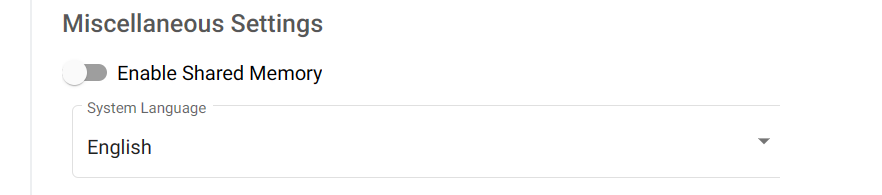

Kubeflow
Overview¶
What does Kubeflow do?¶
Kubeflow runs your workspaces. You can have notebook servers (called Jupyter Servers), and in them you can create analyses in R and Python with interactive visuals. You can save and upload data, download it, and create shared workspaces for your team.

Let's get started!
Video Tutorial¶
This video is not up to date, some things have changed since.

Setup¶
Log into Kubeflow¶
Log into the Azure Portal using your Cloud Credentials
You have to login to the Azure Portal using your StatCan cloud credentials.
first.lastname@cloud.statcan.ca or StatCan credentials
first.lastname@statcan.gc.ca. You can do that using
the Azure Portal.

- Log into Kubeflow
- Navigate to the Notebook Servers tab

- Then click + New Server
Server Name and Namespace¶
- You will get a template to create your notebook server. Note: the name of your server can consist of only lowercase letters, numbers, and hyphens. No spaces, and no underscores.
- You will need to specify a namespace. By default you will have a default namespace for your account, but for projects you may need to select the namespace created specifically for that project. Otherwise the notebook server you create may not have access rights to resources required for the project.
Image¶
You will need to choose an image. There are JupyterLab, RStudio, and Ubuntu remote desktop images available. Select the drop down menu to select additional options within these (for instance, CPU, PyTorch, and TensorFlow images for JupyterLab).
Check the name of the images and choose one that matches what you want to do. Don't know which one to choose? Check out your options here.
CPU and Memory¶
-
At the time of writing (December 23, 2021) there are two types of computers in the cluster
- CPU:
D16s v3(16 CPU cores, 64 GiB memory; for user use 15 CPU cores and 48 GiB memory are available; 1 CPU core and 16 GiB memory reserved for system use). - GPU:
NC6s_v3(6 CPU cores, 112 GiB memory, 1 GPU; for user use 96 GiB memory are available; 16 GiB memory reserved for system use). The available GPU is the NVIDIA Tesla V100 GPU with specs here.
When creating a notebook server, the system will limit you to the maximum specifications above. For CPU notebook servers, you can specify the exact amount of CPU and memory that you require. This allows you to meet your compute needs while minimising cost. For a GPU notebook server, you will always get the full server (6 CPU cores, 96 GiB accessible memory, and 1 GPU). See below section on GPUs for information on how to select a GPU server.
In the future there may be larger machines available, so you may have looser restrictions.
- CPU:
GPUs¶
If you want a GPU server, select 1 as the number of GPUs and NVIDIA as the GPU
vendor (the create button will be greyed out until the GPU vendor is selected if
you have a GPU specified). Multi-GPU servers are not currently supported on the
AAW system.

As mentioned before, if you select a GPU server you will automatically get 6 CPU cores and 112 GiB of memory.
Use GPU machines responsibly
GPU machines are significantly more expensive than CPU machines, so use them responsibly.
Workspace Volume¶
You will need a workspace volume, which is where the home folder will be mounted. There are various configuration options available:
- You can either reuse an existing workspace volume from before, or create a new one.
- You can specify the size of the workspace volume, from 4 GiB to 32 GiB.
- You can choose the option to not use persistent storage for home, in which case the home folder will be deleted as soon as the notebook server is closed. Otherwise the home folder will remain and can be used again for a new notebook server in the future.
Check for old volumes by looking at the Existing option
When you create your server you have the option of reusing an old volume or creating a new one. You probably want to reuse your old volume.
Data Volumes¶
You can also create data volumes that can be used to store additional data. Multiple data volumes can be created. Click the add volume button to create a new volume and specify its configuration. There are the following configuration parameters as for data volumes:
- Type: Create a new volume or use an existing volume.
- Name: Name of the volume.
- Size in GiB: From 4 GiB to 512 GiB.
- Mount Point: Path where the data volume can be accessed on the notebook server, by
default
/home/jovyan/<volume name>.
The garbage can icon on the right can be used to delete an existing or accidentally created data volume.

Configurations¶
There are currently three checkbox options available here:
- Mount MinIO storage to ~/minio (experimental): This should make MinIO
repositories accessible as subfolders / files of the
minio/folder. This is still experimental and may not work properly currently. - Run a Protected B notebook: Enable this if the server you create needs access to any Protected B resources. Protected B notebook servers run with many security restrictions and have access to separate MinIO instances specifically designed for Protected B data.
- Allow access to Kubeflow Pipelines: This will allow the notebook server to create and manage Kubeflow pipelines. Enable this if you want to use Kubeflow pipelines.
Affinity / Tolerations¶
This section needs to be filled in.
Miscellaneous Settings¶
The following can be customized here:
- Enable Shared Memory: This is required if you use PyTorch with multiple data loaders, which otherwise will generate an error. If using PyTorch make sure this is enabled, otherwise it does not matter unless you have another application that requires shared memory.
- System Language: Can specify English or French here.

And... Create!!!¶
- If you're satisfied with the settings, you can now create the server! It may take a few minutes to spin up depending on the resources you asked for. GPUs take longer.
Your server is running
If all goes well, your server should be running!!! You will now have the option to connect, and try out Jupyter!
Once you've got the basics ...¶
Share your workspace¶
In Kubeflow every user has a namespace that contains their work (their notebook servers, pipelines, disks, etc.). Your namespace belongs to you, but can be shared if you want to collaborate with others. For more details on collaboration on the platform, see Collaboration.